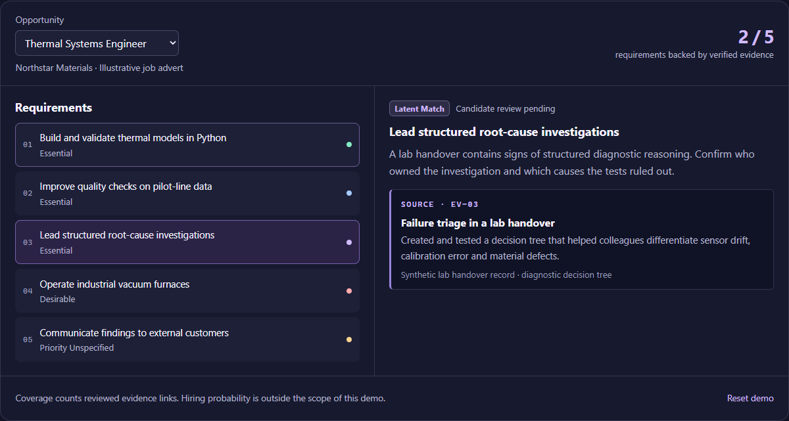
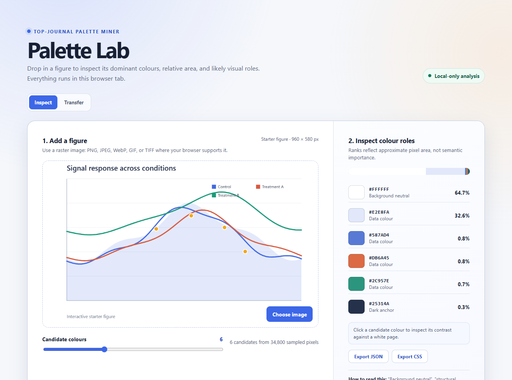

OpenFOAM Thermal Verification
This workflow checks whether an OpenFOAM result balances the heat going in and out.
The room model initially missed the 5% tolerance at 7.96%. A stricter stopping rule brought the imbalance down to 0.918%.
Computational materials researcher & technology builder
I model heat transfer at The University of Manchester. I automate simulations and build research tools with AI assistance.
A simulation checker, a bilingual career tool and a colour tool for scientific figures.
This workflow checks whether an OpenFOAM result balances the heat going in and out.
The room model initially missed the 5% tolerance at 7.96%. A stricter stopping rule brought the imbalance down to 0.918%.

Find out which parts of your experience match a role and where you need more information.
The demo shows the source behind a match. Translated wording stays out of a draft until it has been checked.

See which colours in a figure carry the data, provide context or draw the reader’s eye.
Transfer Lab suggests colours for a new figure. Review the choices and export them as JSON, CSS or a report.
How does fibre structure affect heat loss, and what can that tell us about insulation design?
I use fibre-scale models to understand how heat moves through the material, then estimate its overall thermal conductivity for furnace heat-loss calculations. I automate model setup and data extraction to compare simulations consistently. A parallel CT study asks how well images capture the structure these calculations depend on.
I build 3D fibre networks in COMSOL and model how heat moves through the fibres by conduction and between surfaces by radiation.
I compare and test simpler models that can estimate conductivity without rerunning a full simulation. These estimates can inform furnace heat-loss calculations and insulation design.
I compare measurements from controlled CT-like volumes with reference structures to see how resolution and sampling affect estimates of porosity, fibre direction and connectivity.
Explore my research, software tools and independent projects.
Heat-transfer models, CT image analysis and code that automates simulation work.
An automated workflow that checks OpenFOAM heat-transfer simulations against analytical solutions and energy balances.
I built COMSOL models of fibre networks to study how heat moves through fibrous materials.
I built and tested models that estimate thermal conductivity for engineering calculations.
I processed 3D images to measure porosity, fibre orientation and connectivity, and checked the measurements against reference structures.
I use scripting to automate geometry, simulation runs, data checks and reporting.
Tools for scientific writing, analysing figure colours and applying them to new charts.
A set of instructions for Codex that helps authors plan, draft and revise papers around the results they can support.
A set of instructions for Codex that turns a selected group of papers into a writing guide, with examples and exceptions for each rule.
A browser tool that analyses colours in scientific figures and suggests how to use them in a new chart.
A career tool, an investment research experiment and early ideas for AI in materials science.
A bilingual tool for researchers and engineers to track job opportunities, match their experience to requirements and draft applications.
A Python research tool for comparing investment plans under the same assumptions, developed after a trading rule performed poorly on historical data.
I am exploring how physics and carefully checked data can improve machine learning for materials research.
I start with a question I can test and share the steps so someone else can follow them.
Work out what needs deciding and what would make a fair comparison.
Why I changed the investment studyGo back to the original sources and look for examples that challenge the claim.
How I derive writing rulesShow which part of a person’s experience supports each job requirement.
See how the career tool matches experienceUse AI to explore and write code. Decide what the tool needs to do and test it against that.
Who did what on the investment projectCheck that heat supplied to the model matches the heat leaving it plus any change in stored energy.
See the OpenFOAM checksExport a colour scheme that someone can apply to another figure.
See how Palette Miner exports a schemeAbout
I started in polymer materials and experimental research before moving into computational modelling. I like learning how a problem works before deciding what to build.
That curiosity takes me into unfamiliar areas. I try a small experiment, see what holds up and share what I learn. AI helps me try ideas and write code. I decide what to test and what the results support.
PhD viva passed with minor corrections on 20 November 2026. Currently completing thesis corrections.
I’ve worked with experimental researchers on material properties and modelling assumptions. I’ve also helped MSc students work through modelling problems under academic supervision. I designed and ran introductory COMSOL and Mathematica sessions that linked the software to modelling choices.
In teaching labs, I worked with technicians to troubleshoot experiments and gave students feedback on reports. Earlier, I developed analytical methods and contributed to technical reports for industry research projects. A colleague’s feedback helped me refine how Palette Miner transfers colours between figures.
I’m interested in scientific software and engineering roles where I can build tools and help people use them.
Contact